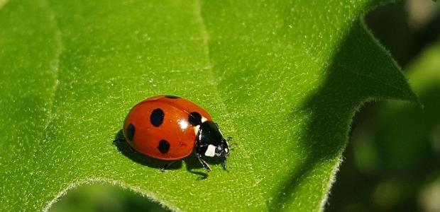

9:41



NO.023
딱정벌레류
칠성무당벌레
3번 만났어요
발견 기록
내 관찰 기록
나뭇잎 위를 천천히 기어가던 칠성무당벌레의
빨간 등에 검은 점이 또렷하게 보였어요.
가까이 다가가자 날개를 펴고 날아갔어요.
관찰 정보
먹이꽃꿀 · 꽃가루
활동시기봄–가을
서식지꽃밭 · 풀숲
크기약 1.5–2.5cm
더 알아보기
칠성무당벌레는 빨간 날개에 일곱 개의 검은 점이 있는
곤충이에요. 주로 식물 주변에서 볼 수 있고,
위험을 느끼면 다리에서 노란색 액체를 내기도 해요.
PICO가 알려줘요 !
- 몸길이 5~8mm 정도의 작은 딱정벌레예요.
- 진딧물을 잡아먹어서 식물을 지켜 주는 곤충이에요.
- 위험을 느끼면 다리 마디에서 노란 즙을 내요.
관련 뱃지
2개 획득